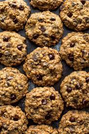

Chewy Chocolate Oatmeal Chips

Description
I modified Beatrice's Excellent Oatmeal cookies very slightly.
I came up with something that my boyfriend went CRAZY over!
I've never seen him enjoy cookies to that extent! He said I
blew his mother's recipe away.
Ingredients
- 1 cup butter, softened
- 1 cup packed light brown sugar
- ½ cup white sugar
- 2 eggs
- 2 teaspoons vanilla extract
- 1 ¼ cups all-purpose flour
- ½ teaspoon baking soda
- 1 teaspoon salt
- 3 cups quick-cooking oats
- 1 cup chopped walnuts
- 1 cup semisweet chocolate chips
Steps
- Preheat the oven to 325 degrees F (165 degrees C).
- In a large bowl, cream together the butter, brown
sugar, and white sugar until smooth. Beat in eggs one
at a time, then stir in vanilla. Combine the flour,
baking soda, and salt; stir into the creamed mixture
until just blended. Mix in the quick oats, walnuts, and
chocolate chips. Drop by heaping spoonfuls onto ungreased
baking sheets.
- Bake for 12 minutes in the preheated oven. Allow
cookies to cool on baking sheet for 5 minutes
before transferring to a wire rack to cool
completely.